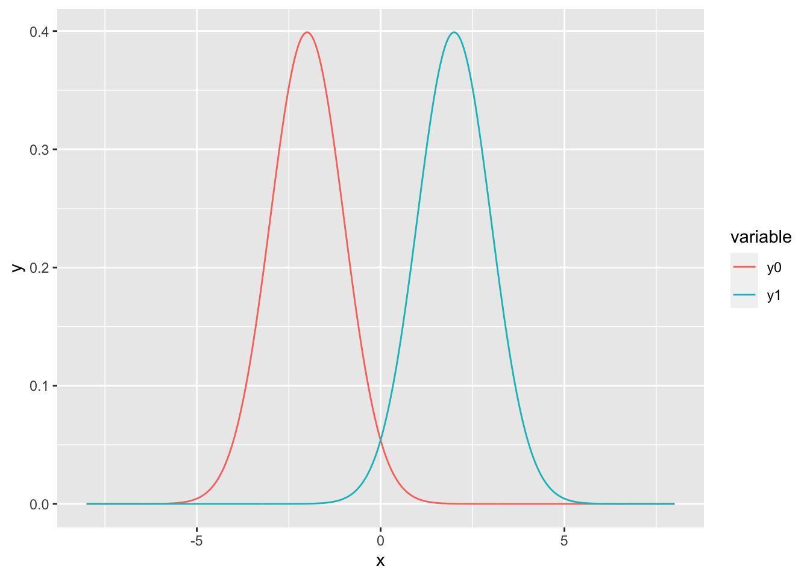

Rmarkdown Example
Math
Here is an example page containing math markdown.
We can use inline math, $f_X$, $f_Y$, and $f_{X,Y}$, as well as display math,
\[
I(X;Y)
= \iint_{\mathcal{X} \otimes \mathcal{Y}}
\log\left( \frac{f_{X,Y}(x,y)}{f_{X}(x)f_{Y}(y)} \right)
f_{X,Y}(x,y) \mathrm{d}y \mathrm{d}x\,.
\]to generate:
We can use inline math, \(f_X\), \(f_Y\), and \(f_{X,Y}\), as well as display math, \[ I(X;Y) = \iint_{\mathcal{X} \otimes \mathcal{Y}} \log\left( \frac{f_{X,Y}(x,y)}{f_{X}(x)f_{Y}(y)} \right) f_{X,Y}(x,y) \mathrm{d}y \mathrm{d}x\,. \]
Plots
x <- seq(-8, 8, length=1000)
y0 <- dnorm(x, -2, 1)
y1 <- dnorm(x, 2, 1)
df <- tibble(x, y0, y1)
df <- melt(df, id.var = "x", value.name = "y")
ggplot(data = df, aes(x = x, color = variable)) + geom_line(aes(y=y))

Figure 5.1: Two normal variates with different means and same variance. Note this figure is a scalable vector graphic — from what I understand, this is better from an accessbility standpoint.
The figure with caption caption is created by typing the code directly into the markdown document:
```{r normals-same-var, echo=TRUE, fig.cap="Two normal variates with different means and same variance. Note this figure is a scalable vector graphic --- from what I understand, this is better from an accessbility standpoint."}
x <- seq(-8, 8, length=1000)
y0 <- dnorm(x, -2, 1)
y1 <- dnorm(x, 2, 1)
df <- tibble(x, y0, y1)
df <- melt(df, id.var = "x", value.name = "y")
ggplot(data = df, aes(x = x, color = variable)) + geom_line(aes(y=y))
```